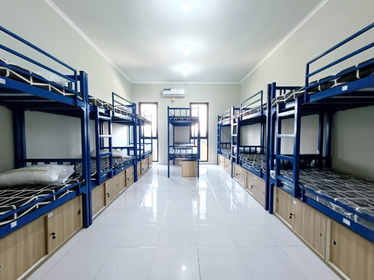

Kamar Ibnu Katsir

Introduction
Saya bernama Muhammad Hibban Syakir akan menjelaskan tenang kamar saya yang sangat "ramah" dan yang sangat indah. Dan juga banyak teman teman yang sangat "baik"
Tentang Kamar Ibnu Katsir
Jadi kamar ibnu katsir ialah adalah kamar yang terletak di paling kiri. Dan kamar yang sangat "ramah" & "indah" dan banyak orang orang yang sangat "baik". Kamar musyrifnya Adalah Ustadz Rio beliau sangat baik dan seru dan teman kamar yang sangat bayank bernilai (14) dan insyaAllah saya akan memberi tahu teman teman kamar saya.
Member(Teman) Kamar
- Azzam Shiddiq Muattahar
- Adyaraka Benjamin
- Albar Abdul Malik
- Luthfian Azzam fadnazzir
- Izzamnuddin Al Qassan
- Bara Ajie Albiruni
- Muhammad Hibban Syakir
- Muhammad Hasan Albanna
- Tsany Al Fachrizy
- Raffasya Zaidan Al Faqrizi
- Muhammad Fadhil Rajaba
- Habieb
- Muhammad Syamil Nur Ferdyan
- Fawwas Romzi Naghib
Kamar-Kamar Yang Lain
- Asy-Syatibi
- Nafi Al Madany
- Ibnu Amir
- Abu Ja'far
- Abu Amr
- Kholaf
- Qolun
- Al Kisa'i
- Ibnu Katsir
~ Tamat ~